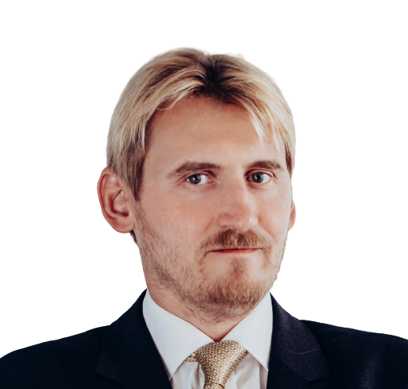

Apie mus
Mašininis mokymasis ir dirbtinis intelektas (DI) tampa būtinomis priemonėmis, norint įgyti pranašumą beveik bet kuriame verslo sektoriuje. Tačiau sėkmingai įgyvendinti projektus, kurių pagrindą sudaro dirbtinis intelektas, nėra paprasta užduotis.
AAI Labs pagrindinis tikslas - padėti įmonėms taikyti mašininį mokymąsi ir dirbtinį intelektą sprendžaint verslo problemas.
Kaip tai gali jums padėti?
Mašininis mokymasis atvėrė daug naujų galimybių versle. Pateikiame kelis pavyzdžius žemiau .
Žinių bazės
Daugelyje kompanijų yra daugybė dokumentų ir duomenų rinkinių, kuriose sunku ieškoti ir sisteminti. Šiuolaikinės DI sistemos gali paimti šiuos nestruktūrizuotus duomenis ir paversti į „DataLake“, kuriame yra paprasta užklausti reikiamos informacijos.


Rinkodara
Išbandyti šimtus skirtingų reklamų ar naujienlaiškių, kad rastumėte geriausią variantą, yra daug laiko reikalaujantis procesas. Tikimybinės sprendimų priėmimo ir optimizavimo sistemos padėtų jums sukurti efektyvesnę reklamos kampaniją išleidžiant mažiau laiko.
Išteklių optimizavimas
Numatyti inventoriaus ar kitų išteklių panaudojimą yra iššūkis. Tačiau, nuprognozavus poreikius iš anksto, lengviau patenkinsite savo ateities lūkesčius.
Mašininės mokymosi sistemos gali iš anksto numatyti inventoriaus / elektros / tinklo apkrovos panaudojimą, suteikiant jums pakankamai laiko pasiruošti ir išvengti nereikalingų nuostolių.


Pardavimai
DI sistemos gali padėti atrasti nepastebėtas pardavimų tendencijas ir rekomenduoti geriausias pardavimo strategijas, padidinant pelną.
Dar daugiau, blogų klientų atpažinimas dažnai yra raktas į ilgalaikės sėkmės užtikrinimą. Dirbtinio intelekto sistemos gali padėti jums atpažinti tokius klientus ir užkirsti kelią dideliems nuostoliams.
Analitika
Negalite patobulinti to, ko negalite išmatuoti. Kartais tikrai sunku išmatuoti klientų pasitenkinimą. Komunikacijos srauto analizė (raštu ar žodžiu), gali būti raktas, kuris leis jums suprasti ką klientai apie jus galvoja.

Sprendimai
Mūsų komanda sėkmingai įgyvendino projektus, kurių metu:
- Apdorota 100 TB duomenų
- Sukūrė optinio atpažinimo sistemą
- Paleistas virtualus balso asistentas
- Sukurta giliųjų tinklų pagrindu pagrįsta kalbos atpažinimo sistema
- Įdiegtos naujienų analizės paslaugos
- Įdiegtos algoritminės prekybos sistemos
Mūsų sritys
- Natūralios kalbos apdorojimas
- Atsakymų į klausimus sistemos
- Kalbos atpažinimas ir supratimas
- Teksto ištraukimo, transformavimo ir įkėlimo (ETL) sistemos
- Tikimybinės sprendimų priėmimo sistemos
Be to, mes puikiai išmanome gilius neuroninius tinklus ir turime patirties diegdami modelius tokius kaip:
- seka į seką rekurentiniai neuroniniai tinklai
- Konvoliucinės vaizdo atpažinimo sistemos
Konsultacijų paslaugos
Sėkmingai konsultavome klientus dėl DI taikymo jų kasdieniniuose procesuose šiomis temomis:
- Duomenų rinkimas AI analizei atlikti.
- Saulės energijos prognozavimas ir gedimų numatymas
- „Blockchain“ taikymas IoT, išmanieji energijos skaitikliai
- Skolų išieškojimo dokumentų atpažinimas
- Kredito rizikos prognozavimas MVĮ
- Europos Sąjungos mokslinių tyrimų stipendijų paraiškos (MTEP)
- Išmanusis transporto ir autobusų keleivių srautų prognozavimas
- Išmaniosios internetinės reklamos kampanijos naudojant sustiprintą mokymąsį
- Atostogų paketų kainodara naudojant neuroninius tinklus
- Mobilių programėlių sėkmės numatymas naudojant AI metodus
Projektų viešinimas
FINBRO
AAI Labs dalyvauja Norvegijos finansinio mechanizmo ir Lietuvos Respublikos valstybės biudžeto lėšų finansuojamame projekte FINBRO. Šio projekto metu kuriamas produktas - finansinių paslaugų platforma, sujungianti finansuotojus ir padedanti žmonėms bei verslui pasiskolinti geriausiomis sąlygomis. AAI Labs atlieka didžiąją dalį darbo įgyvendinant produktą.
Skaityti daugiauE-Komercija
AAI Labs vykdo projektą E-Komercija, kurio tikslas – informacinių technologijų verslo sandoriams valdyti elektroniniu būdu diegimas, siekiant padidinti pajamų augimą.
Projektas finansuojamas pagal priemonę E. komercijos modelis COVID-19
Skaityti daugiauKomanda

Aistis Raudys, CEO
Aistis yra dirbtinio intelekto profesorius Vilniaus universitete, moko algoritminės prekybos ir robotikos. Daktaro laipsnis įgytas dirbtinio intelekto srityje. Daugiau nei 10 metų dirbo „Deutsche Bank“, „Societe Generale“ ir kituose bankuose kaip tyrėjas bei analitikas.
Tadas Šubonis, CTO
Tadas yra patyręs programuotojas ir dirbtinio intelekto inžinierius, dirbęs su projektais, kurie buvo pagrįsti DI technologijomis ir buvo apdorojami dideli duomenų kiekiai. Tadas atsakingas už techninę architektūrą ir projektų sėkmingo veikimo užtikrinimą. Turi dirbtinio intelekto magistro laipsnį iš Škotijos Edinburgo universiteto ir yra sertifikuotas industrijoje pripažintais sertifikatais.
Rokas Giedraitis, tyrėjas
Rokas - atsidavęs ir gabus mašininio mokymosi specialistas, bei patyręs inžinierius ir IT specialistas, sugebantis spręsti sudėtingas problemas.

Lukas Baltramaitis, duomenų tyrėjas
Lukas yra vienas iš 5 geriausių paskutinių kursų programinės įrangos inžinerijos studentų Vilniaus universitete. Gabus matematikas, dar mokydamasis mokykloje 2 kartus iš eilės laimėjo bronzos medalį Lietuvos matematikos olimpiadose. Dabar Lukas savo žinias naudoja spręsdamas duomenų mokslo ir programavimo problemas.

Arnas Radzevičius, kalbos duomenų tyrėjas
Arnas įgijo bakalauro laipsnį Vilniaus universitete ir yra jaunesnysis mašininio mokymosi specialistas, nuolat keliantis savo kompetenciją. Jis turi patirties kuriant teksto į kalbą neuroninio tinklo modelius ir API sistemas. Jis taip pat turi patirties kredito reitingavimo sistemose
Aušra Šubonienė, tyrėja
Aušra yra komandos narė, turinti išsilavinimą ir patirtį politikos mokslų srityje, besidominti viskuo nuo robotikos iki kvantinių skaičiavimų. Ji baigė cum laude Vilniaus universiteto informatikos programą būdama geriausia iš kurso. Ji įgijo patirties mašininio mokymo tyrimuose CERN laboratorijoje, kur ji dirbo su CMS anomalijų aptikimo komanda. Šiuo metu Aušra studijuoja magistrantūroje ir atlieka medicininių vaizdų analizės tyrimus.
Valentinas Kaminskas, tyrėjas
Valentinas yra mid-level back-end programinės įrangos inžinierius. Jo pagrindinės programavimo kalbos yra C#/.NET ir Python. Jis turi patirties su testavimo, Docker, AWS, CI pipelines, mašininio mokymosi ir kitomis technologijomis. Be to, jis sėkmingai baigė taikomosios matematikos studijas Vilniaus universitete.
Valentinas Kaminskas, tyrėjas-inžinierius
Valentinas yra mid-level back-end programinės įrangos inžinierius. Jo pagrindinės programavimo kalbos yra C#/.NET ir Python. Jis turi patirties su testavimo, Docker, AWS, CI pipelines, mašininio mokymosi ir kitomis technologijomis. Be to, jis sėkmingai baigė taikomosios matematikos studijas Vilniaus universitete.
Henrikas Girdzijauskas, tyrėjas
Mašininio mokymosi inžinierius specializuojantis viešojo transporto optimizacijos srityje. Henrikas turi daug programinės įrangos kūrimo patirties dirbant komerciniuose projektuose su Javascript ir PHP technologijomis. Šio metu Henrikas studijuoja informatiką Vilniaus universitete.
Julius Šyvis, tyrėjas
Julius - programinės įrangos inžinierius, didelį dėmesį skiriantis matematikos taikymams programose. DI problemas Julius sprendžia remiantis Jam artimais programinės įrangos kūrimo principais. Taip pat Julius domisi sistemų programavimu bei skatinamuoju mašininiu mokymusi.
Dzmitry Dzemiashkevich, tyrėjas
Dzmitry yra iš Baltarusijos. Mokykloje jis dalyvavo matematikos ir programavimo konkursuose, kurie atvedė į Vytauto Didžiojo universitetą, Informatikos fakultetą. Dzmitry kaip mainų studentas studijavo Regensburgo universitete, kuriame mokėsi verslo dalykų kartu su mašininiu mokymusi neurologijai. Su mašininiu mokymusi jis pirmą kartą susidūrė vidurinėje mokyloje einant Andrew Ng kursus. Dzmitry groja saksofonu ir 7 metus profesionaliai žaidė ledo ritulį. Jis laisvai kalba rusų, baltarusių, anglų kalbomis, o šiuo metu mokosi vokiečių ir italų kalbų.
Robert Mackevič, tyrėjas
Robertas yra jaunesnysis programinės įrangos inžinierius, studijuojantis informatiką Vilniaus universitete. Jis turi patirties su Python ir šiuo metu dirba su kompiuterine regimybe pagrįstais metodais įvairioms problemoms spręsti.
Mintija Šimulionytė, tyrėjas
Mintija yra Vilniaus Universiteto 4 kurso duomenų mokslo studentė. Nuo pat ankstyvosios mokymosi pradžios įsimylėjo matematiką ir informacines technologijas ir besimokydama gimnazijoje baigė Lietuvos jaunųjų matematikų mokyklą.
Julius Gaidukevičius, tyrėjas
Julius nesenai baigė informatikos studijas Vilniaus Universitete. Julius anksčiau dirbo ties mašininio mokymosi modelių perkėlimu į mikrokontrolerius bei kuriant mažos saulės elektrinės efektyvaus naudojimo prototipą. Julius domisi daugeliu skirtingų temų - pradedant žemo lygio (low-level) programavimu, baigiant mašininiu mokymusi.
Vilius Juodys, Business Developer
Vilius yra komandos narys, dirbantis su projektų valdymu ir verslo plėtra. Šiuo metu jis mokosi tarpdisciplininėje programoje Sciences Po Paris universitete Prancūzijoje ir LUISS Guido Carli universitete Romoje, Italijoje. Jo ankstesnė patirtis - praktika Lygių galimybių kontrolieriaus tarnyboje bei LR Prezidento užsienio politikos grupėje.